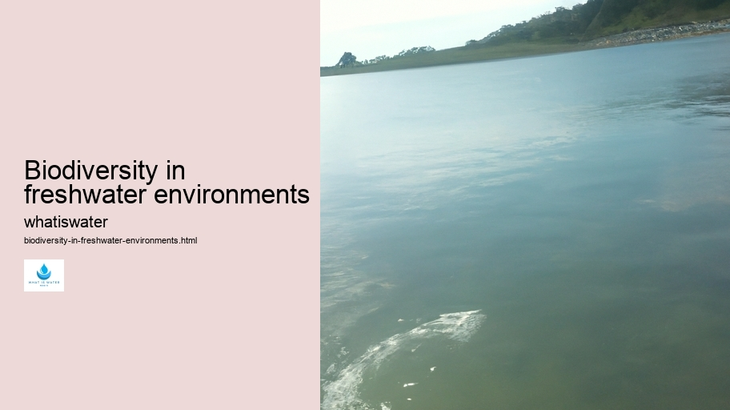

Hydrological Cycle
Hydrological Cycle
Evaporation and transpiration
Condensation and cloud formation
Precipitation and rain patterns
Surface runoff and river systems
Groundwater flow and aquifers
Snowmelt and glacial processes
Water storage in oceans lakes and reservoirs
Soil moisture and infiltration
Water balance and budgeting
Human impact on the hydrological cycle
Marine Ecosystems
Marine Ecosystems
Coral reefs and their biodiversity
Mangrove forests as coastal protectors
Ocean currents and climate regulation
Deepsea habitats and extremophiles
Intertidal zones and estuarine ecosystems
Marine food webs and trophic levels
Freshwater Ecosystems
Freshwater Ecosystems
Conservation efforts for marine species
Marine biogeochemical cycles
Impact of global warming on oceans
Water Resource Management
Water Resource Management
Rivers streams and creeks ecosystems
Lakes ponds wetlands habitats
Biodiversity in freshwater environments
Aquatic plants role in oxygenation
Freshwater fish species diversity
Invasive species impact on freshwater systems
Pollution threats to freshwater sources
Conservation strategies for freshwater biomes
Role of wetlands in flood control
Importance of riparian buffers
Cultural Significance of Water
Cultural Significance of Water
Sustainable water use practices
Desalination technologies for fresh water supply
Wastewater treatment processes
Rainwater harvesting techniques
Management of water during drought conditions
Transboundary water resource politics
Infrastructure for water distribution
Agricultural irrigation efficiency
Urban water demand management
Impact of climate change on water resources
About Us
Contact Us

Biodiversity in freshwater environments
>
Water Quality
Biodiversity in freshwater environments is an intricate tapestry of life, encompassing a vast array of organisms ranging from microscopic bacteria to the more conspicuous amphibians and fish that draw our attention. Freshwater habitats, including rivers, lakes, wetlands, and streams, are home to roughly 10% of all known species, despite covering less than 1% of Earth's surface.
One might marvel at the sheer variety within these aquatic realms. Invertebrates such as dragonflies and damselflies begin their lives in water before emerging into the air. Mollusks filter water for nutrients while providing food for other creatures. Amphibians like frogs and salamanders depend on freshwaters for breeding but also exploit terrestrial habitats.
Fish species demonstrate remarkable adaptations to their specific environments. Consider the bottom-dwelling catfish with its sensory barbels or the swift salmon navigating back to natal streams to reproduce.
Hydroponics
Freshwater ecosystems provide essential services by purifying water through natural processes involving plants and microorganisms which degrade pollutants.
However, freshwater biodiversity faces unprecedented threats from human activities like pollution, habitat destruction, overfishing, and climate change.
Biodiversity in freshwater environments - Aquaculture
Surface Water
Floods
Virtual Water
Water and Sanitation
Water Filtration
Bottled Water
Aquaculture
Aquatic species are disappearing at alarming rates with dire consequences for ecosystem health and human welfare dependent on these vital resources.
Biodiversity in freshwater environments - Aquaculture
Aquaculture
Hydroponics
Hydration and Health
Surface Water
Floods
Virtual Water
Conservation efforts must prioritize protecting these ecosystems through sustainable management practices that include reducing pollution inputs, restoring degraded habitats, regulating fishing practices, and mitigating climate change impacts.
Biodiversity in freshwater environments - Water Quality
Floods
Virtual Water
Water and Sanitation
Water Filtration
Public awareness campaigns can educate about the importance of freshwaters while encouraging behaviors that support conservation goals.
In conclusion, preserving biodiversity in freshwater environments is crucial not only for maintaining ecological balance but also for ensuring continued benefits to humanity. By fostering stewardship of these precious waters we safeguard a legacy of rich natural heritage for future generations to cherish and enjoy.
Hydrological Cycle
Check our other pages :
Water balance and budgeting
Water storage in oceans lakes and reservoirs
Deepsea habitats and extremophiles
Frequently Asked Questions
What is biodiversity in freshwater environments and why is it important?
Biodiversity in freshwater environments refers to the variety of life within inland water ecosystems, including lakes, rivers, streams, wetlands, and ponds. It encompasses the different species of plants, animals (such as fish, amphibians, birds), and microorganisms; their genetic diversity; and the complex interactions among them. Freshwater biodiversity is important because it maintains ecosystem health and resilience, supports food webs and nutrient cycles, provides fresh water for human use, offers recreational opportunities, harbors many endemic species that are found nowhere else on Earth, and contributes to cultural values.
How do human activities impact freshwater biodiversity?
Human activities can significantly impact freshwater biodiversity through pollution (chemical runoff from agriculture or industry), habitat destruction (damming rivers or draining wetlands), overfishing or unsustainable fishing practices that deplete certain species populations. Climate change also affects water temperature and flow patterns which can disrupt life cycles of aquatic organisms. Invasive species introduced by human activity compete with native species for resources. All these factors contribute to habitat degradation and loss of species.
What are some key indicators of healthy freshwater biodiversity?
Key indicators include a high level of species richness (the number of different species present) as well as endemism (species unique to a specific location); a balanced population distribution among different taxonomic groups; robust populations that are resilient to natural fluctuations; intact food webs with predators at top levels; clean water quality free from excessive nutrients or toxins; natural hydrological conditions such as seasonal floods that maintain habitats; connectivity allowing movement between upstream-downstream areas.
Can you name some critically endangered freshwater species?
Critically endangered freshwater species vary globally but may include certain types of fishes like the Mekong Giant Catfish (Pangasianodon gigas), amphibians like the Panamanian Golden Frog (Atelopus zeteki), mollusks like the Higgins Eye Pearly Mussel (Lampsilis higginsii), crustaceans such as the Alaotra Grebe (Tachybaptus rufolavatus). These creatures face extinction due to various threats like habitat loss or degradation.
What actions can be taken to preserve biodiversity in freshwater environments?
Actions include establishing protected areas around critical habitats; restoring degraded aquatic systems; implementing sustainable land-use practices that minimize pollution runoff into watersheds; regulating fishing practices to prevent overexploitation; controlling invasive alien species through prevention strategies and management plans. Raising public awareness about the importance of conserving aquatic ecosystems will also go a long way toward encouraging responsible behavior toward our planets precious water resources. Additionally, supporting local communities in sustainable livelihoods helps reduce pressure on these ecosystems.